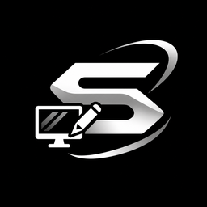

Welcome to Shadnox: Where Technology Meets Personalization.
Shadnox is more than just a desktop customization platform. It is a project built around creativity, technology, privacy, personalization, and the idea that every user deserves an operating system experience that feels truly their own.
Created by Shadnox, a developer, website creator, and ethical hacking enthusiast, Shadnox was designed to bring a new level of customization and control to desktop environments. The goal is simple: give users the ability to transform the appearance and experience of their desktops while keeping simplicity, functionality, and privacy in mind.
Whether you want a completely different desktop appearance, a personalized taskbar, a unique wallpaper setup, or an additional private screen layer, Shadnox aims to give you the tools to make your desktop feel more personal.
Who Am I?
My name is Shadnox.
I am a developer, website creator, technology enthusiast, and ethical hacking enthusiast with a strong interest in cybersecurity, software development, digital privacy, and modern user experiences.
My journey in technology comes from curiosity and the desire to understand how things work. From creating websites and experimenting with different technologies to exploring cybersecurity concepts and developing digital projects, I enjoy turning ideas into functional experiences.
I believe that technology should not only be powerful but also accessible, customizable, and enjoyable to use.
Shadnox is one of the projects through which I want to bring these ideas to life.
Every feature, design decision, and improvement represents an ongoing effort to create something useful, different, and meaningful for people who enjoy having control over their digital environments.
What Is Shadnox?
Shadnox is a desktop customization project designed to provide users with additional ways to personalize and enhance their desktop experience.
Instead of being limited to the default appearance of your operating system, Shadnox aims to give you more freedom over how your desktop looks and feels.
The platform is designed with compatibility in mind for:
The idea behind Shadnox is to make desktop personalization easier and more accessible, allowing users to explore different visual styles and customization possibilities without needing to completely change their operating system.
From appearance adjustments to privacy-oriented visual features, Shadnox brings several customization ideas together in one project.
Our Features
Private Screen Layer
Privacy is an important part of the Shadnox experience.
The Private Screen Layer is designed to introduce an additional visual privacy feature to your desktop. It gives users another way to manage what appears on their screen and customize their visual workspace.
Whether you are working, studying, browsing, or simply using your computer in a shared environment, privacy-conscious features can make your desktop experience more comfortable.
Our goal is to make privacy-oriented customization a natural part of the desktop experience.
Taskbar Customization
Your taskbar is one of the most frequently used parts of your desktop.
With Shadnox, the vision is to give users more freedom to personalize their taskbar and create an appearance that matches their individual style.
We believe that even small visual changes can completely transform the feeling of a desktop.
Your desktop should reflect your preferences, not just the default settings of your operating system.
Desktop Wallpaper Customization
Your desktop background is one of the first things you see when you turn on your computer.
Shadnox aims to make wallpaper personalization easier by giving users more opportunities to create an environment that represents their personality and preferences.
Whether you prefer minimalistic designs, dark aesthetics, futuristic themes, clean layouts, or creative backgrounds, your desktop should feel like your own space.
Lock Screen Customization
Personalization should not stop at your desktop.
Your lock screen is another important part of your computer's visual identity.
Shadnox aims to extend the customization experience to lock screen appearances, helping users create a more consistent visual style across their devices.
A Unified Customization Experience
One of the main ideas behind Shadnox is bringing different customization possibilities together.
Rather than treating your wallpaper, taskbar, lock screen, and privacy-oriented visual features as completely separate experiences, Shadnox aims to create a more unified approach to desktop personalization.
The objective is to make customization easier to understand, more convenient to access, and enjoyable to explore.
Privacy & Security
Privacy and security are important values behind the Shadnox project.
As someone interested in ethical hacking and cybersecurity, I understand the importance of developing technology with security awareness in mind.
Technology should be created responsibly, and users should be able to understand what they are installing and how it interacts with their devices.
Shadnox is built around the idea that users deserve transparency and control.
We believe in:
- Respecting user privacy.
- Being transparent about software functionality.
- Encouraging responsible technology usage.
- Avoiding unnecessary access to personal information.
- Treating cybersecurity as an important part of software development.
- Encouraging users to understand the applications they install.
Our vision is to make privacy-conscious technology and desktop personalization work together.
Our Vision
We believe that the future of desktop computing should be more personal.
Operating systems provide powerful tools, but users do not always have the freedom or convenience they want when customizing their environments.
Shadnox was created with a different perspective: your computer should feel like your own.
We want to explore new ideas, introduce useful customization possibilities, improve the user experience, and continue developing features that make desktop environments more flexible.
Our long-term vision is to develop Shadnox into a recognizable desktop customization project that brings together personalization, privacy, creativity, and technology.
This is not just about changing colors or wallpapers. It is about giving users more control over their everyday digital experience.
Built With Passion
Shadnox is an independent project driven by curiosity, experimentation, and a passion for technology.
Behind every project is an idea, and behind Shadnox is the belief that even one developer can create something that makes a difference.
There is always something new to learn, something to improve, and another idea worth exploring.
Development is an ongoing process. Features evolve, designs improve, and new possibilities appear as technology advances.
Shadnox will continue to grow through development, testing, improvements, and new ideas.
Our Commitment
We are committed to continuously improving the Shadnox experience.
Our priorities include:
- Improving usability and accessibility.
- Exploring new desktop customization features.
- Maintaining a clean and modern interface.
- Prioritizing responsible development practices.
- Improving compatibility across supported platforms.
- Listening to feedback and identifying opportunities for improvement.
- Making the experience as straightforward as possible.
We understand that no project is perfect from the beginning. Growth takes time, testing, and dedication.
That is why improvement is an essential part of the Shadnox journey.
A Message From The Developer
Shadnox started with an idea: what if users had more freedom to customize their desktop experience without complicated processes?
I wanted to create something that combines my interests in development, technology, cybersecurity, and design into one project.
I believe that the best projects are not necessarily the biggest ones. They are the ones built with passion, creativity, and a genuine desire to improve something.
Shadnox represents my vision of a more customizable desktop experience.
I am continuously exploring new ideas, learning new technologies, and looking for ways to improve the project.
Every improvement is another step forward, and every new feature brings the project closer to what I originally imagined.
Thank you to everyone who visits, explores, tests, and supports Shadnox.
Your interest and feedback are valuable parts of this journey.
This is Shadnox. This is only the beginning.

SHADNOX
Customize Your World. Own Your Experience.
- Developer
- Shadnox
- Project
- Shadnox
- Category
- Desktop Customization & Privacy-Oriented Tools
- Platforms
- Windows 10, Windows 11, and macOS (subject to feature compatibility)
- Official Website
- https://shadnox1.onrender.com
Thank you for being part of the Shadnox journey.
Get Shadnox ↓